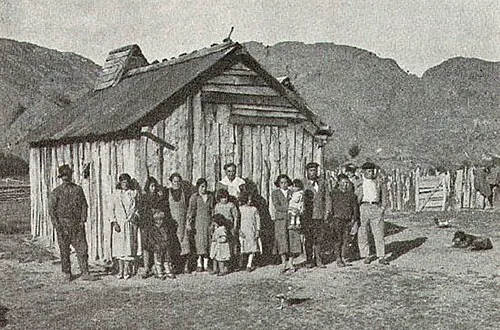

Colonización de Aysén

Los archipiélagos de Aysén fueron recorridos durante siglos por los canoeros chonos y las estepas del interior por grupos tehuelches, pero el interior fue para el Estado chileno un territorio casi desconocido hasta fines del siglo XIX. En 1870 la Armada encargó al capitán Enrique Simpson explorar la costa de la Patagonia occidental; Simpson llegó al borde de la meseta y descubrió el valle que hoy lleva su nombre. Entre 1892 y 1902, el geógrafo alemán Hans Steffen recorrió la región para el gobierno. El Tratado de Límites con Argentina de 1881 fijó la frontera en las cumbres que dividen las aguas, pero en esta zona su aplicación era difícil, y solo el arbitraje británico de 1902 la definió.
Resuelto el límite, el Estado arrendó grandes extensiones a compañías ganaderas. En 1903 se formó, con capitales de Magallanes, la Sociedad Industrial de Aysén, que obtuvo los valles de Ñirehuao, Coyhaique y Mañihuales. Abrió un camino hasta el mar, donde instaló en 1913 el embarcadero que dio origen a Puerto Aysén, y una línea de barcos a Puerto Montt. En 1904 la Sociedad Explotadora del Baker recibió otra concesión, pero quebró pocos años después por el aislamiento y los costos.
Al mismo tiempo llegó una colonización espontánea: familias chilenas que vivían en Argentina cruzaron la cordillera y ocuparon los valles más fértiles, como el Simpson desde 1903 y Chile Chico desde 1909. Vivían en condiciones muy duras y chocaron con las compañías; el caso más conocido fue la llamada Guerra de Chile Chico, entre 1917 y 1918. En 1927 el gobierno de Carlos Ibáñez creó el Territorio de Aysén, en 1928 un nuevo contrato obligó a la Sociedad Industrial a devolver buena parte de sus tierras, y en 1929 se fundó Coyhaique sobre su antigua estancia central. Las leyes de colonización de 1930 y 1937, reunidas en el Decreto 311 de 1937, permitieron entregar gratis hasta 600 hectáreas a los chilenos que ocupaban y cultivaban tierras en Aysén desde antes de 1927. Ese mismo año Aysén pasó a ser provincia.
La colonización tuvo un costo ambiental enorme: para abrir praderas se incendiaron grandes superficies de bosque nativo, algunas durante años, y la erosión que siguió todavía es visible. Memoria Chilena la describe como una verdadera catástrofe ecológica. Los historiadores también debaten el modelo elegido: el Estado entregó primero la tierra a grandes sociedades y solo después reconoció a los pequeños colonos, que fueron quienes poblaron y sostuvieron la presencia chilena en la región.
Versión para niños
Aysén es una región del sur de Chile llena de montañas, ríos, lagos y bosques. Durante siglos, sus canales fueron recorridos por los chonos en sus canoas, y sus pampas del interior, por cazadores tehuelches. Hace poco más de cien años, el gobierno entregó grandes terrenos a compañías ganaderas, y también llegaron familias chilenas que vivían en Argentina. Construyeron casas, caminos y pueblos como Coyhaique. Para tener campos donde criar animales quemaron muchos bosques, y todavía se ven troncos quemados en algunos lugares.
Para maestros
Nivel sugerido: 1° medio
Objetivo: Comprender la colonización de Aysén como la última etapa de la incorporación del territorio, comparando el papel de las grandes concesiones y de los colonos espontáneos, y evaluando sus efectos ambientales. El rango 1903–1937 va desde la Sociedad Industrial de Aysén hasta la ley de colonización y la creación de la provincia.
Preguntas para la clase:
- ¿Por qué el Estado entregó primero la tierra a grandes compañías?
- ¿Qué dificultades enfrentaron las familias de colonos que llegaron desde Argentina?
- ¿Qué consecuencias tuvieron los incendios de bosques y quién debería haberlos evitado?
Actividad (20–30 min): Con el texto de esta nota, los estudiantes se dividen en dos grupos: representantes de la Sociedad Industrial y familias de colonos. Cada grupo prepara tres argumentos sobre quién debía quedarse con la tierra. Después leen juntos lo que dispuso el Decreto 311 de 1937 (párrafo tres) y discuten qué grupo salió favorecido. Cierre: observar la imagen de los colonos del río Baker y describir cómo vivían.
Fuentes sugeridas: Memoria Chilena; Biblioteca del Congreso Nacional (BCN); Museo Regional de Aysén.
Objetivos de Aprendizaje (Currículum Nacional)
- 6° básico · HI06 OA 12 Comparar diversos ambientes naturales en Chile … patagónico y polar), considerando como criterios las oportunidades y las dificultades que presentan
- 8° básico · HI08 OA 21 Analizar y evaluar problemas asociados a la región en Chile -como los grados de conexión y de aislamiento
- 1° medio · HI1M OA 12 Describir los procesos de exploración y reconocimiento del territorio que impulsó el Estado … delimitar sus fronteras
Fuentes
- Memoria Chilena — Exploradores y colonos en Aysén (1870-1927)
- Memoria Chilena — Sociedad Industrial de Aysén
- Biblioteca del Congreso Nacional — Decreto 311 de 1937, texto definitivo de la Ley de Colonización de Aysén
- Museo Chileno de Arte Precolombino — Tehuelche: historia
- Servicio Nacional del Patrimonio Cultural — Osorio, «La ocupación del sector Coyhaique Bajo: desde la Estancia Coyhaique al Museo Regional de Aysén»
Revisión humana pendiente. Cómo se revisa · Reportar un error
Cómo citar: Historia de Chile. (2026). Colonización de Aysén. En Historia de Chile: atlas y línea de tiempo. https://moises-salgado.github.io/historia-de-chile/momento/colonizacion-de-aysen.html